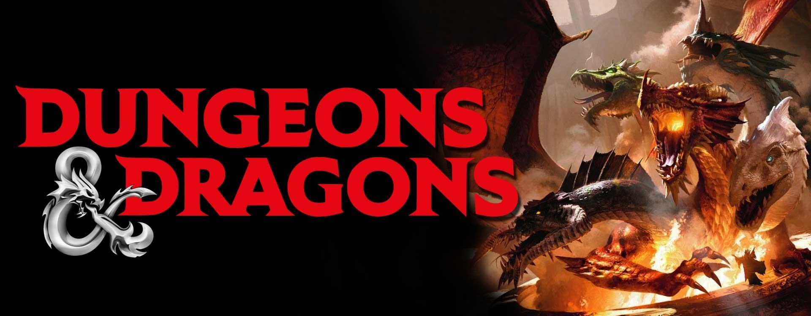

About the Game & History
"Dungeons & Dragons" (D&D) is a tabletop role-playing game that was first created by Gary Gygax and Dave Arneson
in the early 1970s. The game's roots can be traced back to miniature wargaming, where players controlled armies
of miniatures on a tabletop battlefield. Gygax and Arneson adapted these wargaming mechanics into a fantasy
setting, where players took on the roles of individual characters rather than entire armies.
The game's first edition, simply called "Dungeons & Dragons," was published in 1974 by Gygax's company, Tactical
Studies Rules (TSR). This edition introduced the concept of using dice to determine outcomes, character classes
like wizards and fighters, and a system for dungeon exploration and combat.
In 1977, an expanded and refined version called "Advanced Dungeons & Dragons" (AD&D) was released. This edition
separated the rules into multiple hardcover books and introduced more complex mechanics and character options.
AD&D became highly popular and solidified D&D's place in pop culture.
Over the years, several editions of the game were released, including 2nd Edition in 1989, 3rd Edition in 2000,
3.5 Edition in 2003, and 4th Edition in 2008. Each edition brought changes and improvements to the game's
mechanics, rules, and setting.
The 5th Edition of Dungeons & Dragons (D&D 5E) was released in 2014 by Wizards of the Coast, the company that
acquired TSR. D&D 5E aimed to streamline gameplay, making it more accessible to new players while also
incorporating elements that appealed to veterans of earlier editions. The edition's focus on storytelling,
flexible mechanics, and inclusivity contributed to its widespread popularity.
Throughout its history, D&D has not only influenced the world of gaming but has also had a significant impact on
pop culture, inspiring books, movies, video games, and more. It has fostered a passionate and dedicated
community of players, creators, and enthusiasts who continue to shape the game's legacy through their own
adventures and contributions.

The 5th Edition of Dungeons & Dragons (D&D 5E) is a tabletop role-playing game that focuses on accessibility,
flexibility, and storytelling. Players create fantasy characters with distinct abilities and skills, while one
player takes on the role of the Dungeon Master (DM), who guides the game's narrative and controls the world.
D&D 5E uses a 20-sided die (d20) as the core mechanic. Players roll the d20 and add modifiers to determine the
outcomes of various actions, such as attacking enemies, overcoming challenges, or interacting with the
environment. The game covers diverse aspects, including combat, exploration, and social interactions.
Character creation involves choosing a race (e.g., human, elf), class (e.g., wizard, rogue), and background.
Each class has unique abilities, and characters' abilities are defined by scores in six core attributes
(Strength, Dexterity, Constitution, Intelligence, Wisdom, Charisma).
Combat occurs in turn-based rounds, where characters engage in actions like attacking, casting spells, or using
items. Characters have hit points (HP) representing their health, and combat involves rolling dice to determine
damage dealt and received.
Magic plays a significant role in D&D 5E. Spellcasting classes like wizards and clerics have access to spells
with various effects, from damaging enemies to healing allies or altering reality.
The game encourages role-playing and collaborative storytelling. Players describe their characters' actions and
dialogue, while the DM brings the world to life and controls non-player characters (NPCs). Players can explore
dungeons, solve puzzles, negotiate with NPCs, and participate in epic quests.
Dungeons & Dragons 5th Edition (D&D 5E) is a tabletop role-playing game where players collectively create and
navigate a fantasy world. One player takes on the role of the Dungeon Master (DM), crafting the setting,
scenarios, and characters that the other players will encounter. Players themselves create unique characters,
selecting a race (like elves or dwarves) and a class (like wizards or fighters), each with distinct abilities.
The game revolves around rolling various-sided dice to determine the outcomes of actions. The core die is a
20-sided one, the d20. When a character attempts something uncertain, they roll the d20 and add modifiers based
on their abilities and skills. If the result meets or exceeds a target number, set by the DM, the action
succeeds.
Combat is a central element of the game. Players take turns during combat rounds, engaging in actions like
attacking enemies, casting spells, or using items. Players roll d20s to see if their attacks hit, and if
successful, they roll additional dice to determine the damage dealt.
Magic is a fundamental aspect of the game, especially for spellcasting characters. Wizards, clerics, and other
classes have access to a variety of spells with different effects, adding strategic depth to encounters and
exploration.
D&D 5E encourages imaginative storytelling and role-playing. Players describe their characters' actions,
interactions, and dialogues, while the DM narrates the outcomes and guides the unfolding adventure. As
characters overcome challenges, they gain experience points, leading to leveling up and the acquisition of new
abilities. The game's rules provide a flexible framework for collaborative storytelling, exploration, combat,
and magic, fostering a unique and engaging experience for each group of players.
.png)